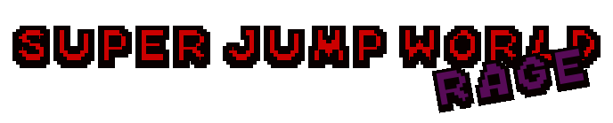
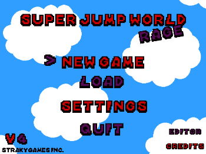
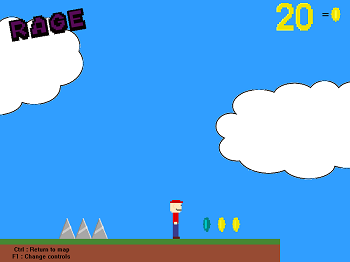
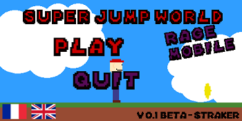
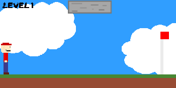

Straky Web

SuperJumpWorld Rage est un univers de jeu créer par moi-même.
Le but de la version ordinateur est tel que Unfair Mario ou Cat Mario.
Finir les niveaux du jeu sans se prendre d'obstacles parfois, invisible.
Le but de la version téléphone est que vous controllez non pas le joueur
mais les obstacles et votre mission est d'empêcher le joueur de finir le niveau.
Voici quelques photos :
 
 
Les versions du jeu sont disponible en téléchargement ci-dessous.
Télécharger version Windows Télécharger version MacOS
Télécharger version Android (beta)